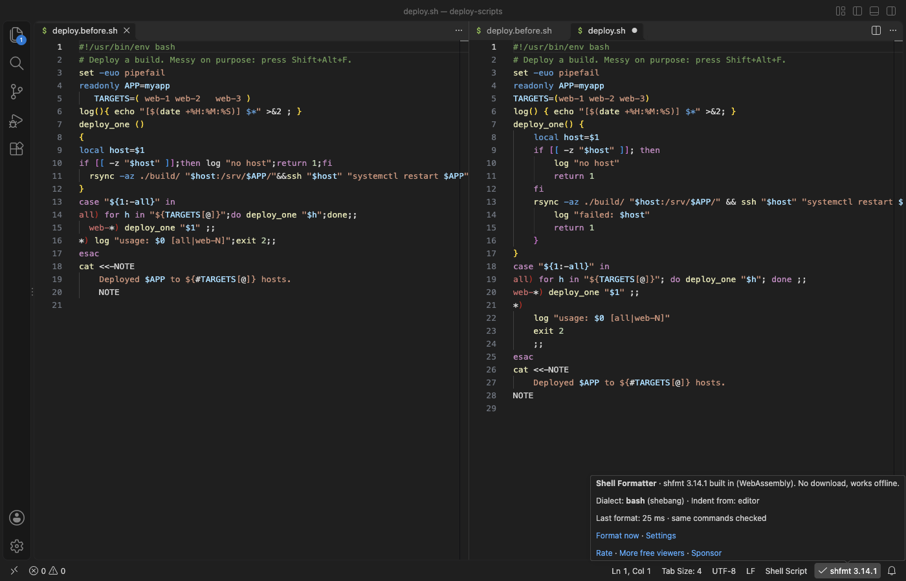

Handleidingen in het Nederlands
Een bash- of zsh-script formatteren in VS Code
Installeer de gratis Shell Formatter for Bash & Zsh, open een shellscript en druk op Shift+Alt+F (Shift+Option+F op een Mac). De shfmt 3.14.1-engine zit als WebAssembly in de extensie, dus je hoeft niets te downloaden, en de uitvoer is byte voor byte gelijk aan die van shfmt op de commandline. Format Document, Format Selection, formatteren bij opslaan, de sleutels uit .editorconfig en syntaxfouten in Problems zijn gratis en werken offline. Zovo Pro (eenmalig 19 USD) voegt drie tools toe, Format All Shell Scripts in a Folder, Formatting Check with a Patch File en Minify a Script to a Copy, en elke tool heeft 3 gratis pogingen.
Gratis, MIT-licentie. Extensie-ID zovo.zovo-shell-formatter, versie 0.1.1.
Deze handleiding is ook beschikbaar in English · Deutsch · Español · Français · 日本語 · 한국어 · Polski · Português (Brasil) · Русский · 简体中文 · Italiano · Türkçe · Bahasa Indonesia · Tiếng Việt · हिन्दी · ไทย · Українська

Stappen in VS Code
- Installeer Shell Formatter for Bash & Zsh via de Marketplace, of druk op Ctrl+P (Cmd+P op macOS) en voer
ext install zovo.zovo-shell-formatteruit. - Open een shellscript en druk op Shift+Alt+F (Shift+Option+F op een Mac). Vraagt VS Code welke formatter je wilt gebruiken, kies dan Shell Formatter, of voer "Shell Formatter: Use as Default Formatter for Shell Scripts" uit.
- Wil je bij elke keer opslaan formatteren, voer dan "Shell Formatter: Turn On Format on Save for Shell Scripts" uit.
- Het dialect komt uit de eerste regel (
#!/bin/bash,#!/bin/sh,#!/usr/bin/env zsh), daarna uit de bestandsnaam (.bash,.zsh,.zshrc,.bats,.ksh), en anders is het bash. Wil je het zelf kiezen, stel danshellFormatter.dialectin ofshell_variantin.editorconfig. - Klik op shfmt 3.14.1 in de statusbalk voor het menu, met formatteren, als standaard instellen, formatteren bij opslaan, "Copy the matching shfmt command (for CI)" en instellingen.
- Is het script geen geldige shell, dan blijft het ongewijzigd en toont het paneel Problems de regel en kolom.
Wat gratis is en wat Zovo Pro toevoegt
Format Document, Format Selection, formatteren bij opslaan, dialectherkenning, de sleutels uit .editorconfig, het menu in de statusbalk, Copy the Matching shfmt Command (for CI) en syntaxfouten in Problems zijn gratis. Er is geen aanmelding, geen netwerkverzoek en geen telemetrie.
Format All Shell Scripts in a Folder controleert elk script in een map en de submappen, herkend aan de naam of aan een #!-regel die een shell noemt, en meldt hoeveel er zouden veranderen. Daarna formatteert het ze allemaal of geeft het een Markdown-rapport, met dezelfde engine, instellingen en .editorconfig als Format Document. Een repository met tientallen scripts in verschillende stijlen krijgt zo in één keer één stijl, en scripts die daarna niet meer dezelfde commando's zouden uitvoeren, blijven zoals ze zijn.
Format All Shell Scripts in a Folder gebruiken (Zovo Pro)
- Klik in de Explorer met de rechtermuisknop op een map en kies "Zovo Pro: Format All Shell Scripts in a Folder", of voer "Shell Formatter: Format All Shell Scripts in a Folder (Pro)" uit vanuit het Command Palette of het menu in de statusbalk en kies de map.
- De titel van de volgende lijst toont hoeveel scripts zouden veranderen, zoals "N of M scripts would change".
- Kies "Format N scripts" om elk bestand te formatteren en op te slaan (Undo werkt per bestand), of "Show the report only" voor een Markdown-lijst van alle scripts zonder dat er iets verandert.
- Een poging telt pas als je een resultaat krijgt. Een map zonder shellscripts, of waarin elk script al geformatteerd is, kost geen poging.
Format All Shell Scripts in a Folder werkt 3 keer gratis op je computer voordat om een licentie wordt gevraagd. Er is geen pop-up en geen aftelling.
Zovo Pro kost eenmalig USD 19. Het is geen abonnement, en de licentie zet de Pro-tools aan in alle Zovo-extensies, niet alleen in Shell Formatter for Bash & Zsh. Na betaling met een kaart (Stripe) staat je licentiesleutel op de volgende pagina. Voer in VS Code "Zovo Pro: Enter Zovo Pro license key" uit vanuit het Command Palette en plak de sleutel. De sleutel wordt op je eigen computer gecontroleerd, zonder netwerkverbinding. Betaal je via GitHub Sponsors, kies dan het niveau "$19 one time" en voer daarna "Zovo Pro: I already paid: unlock with GitHub Sponsors" uit.
Een team van 5 personen betaalt eenmalig USD 59 (met een kaart). Alle regels en alle Pro-tools staan op de Zovo Pro-pagina (Engels).
Stappen in Cursor, Windsurf of VSCodium
- Open de Extensions-weergave met Ctrl+Shift+X (Cmd+Shift+X op macOS).
- Zoek
zovo.zovo-shell-formatteren klik op Install. Cursor, Windsurf en VSCodium installeren extensies van Open VSX, waar deze extensiezovo/zovo-shell-formatterheet. - Heeft je editor geen galerie, download dan het .vsix-bestand van de pagina op Open VSX en voer "Extensions: Install from VSIX..." uit.
- Daarna werkt alles zoals in VS Code.
Wat Shell Formatter for Bash & Zsh doet
- Bash, POSIX sh (ook dash en ash), mksh (ook ksh), bats en zsh-scripts.
- Dezelfde uitvoer als shfmt 3.14.1 op de commandline. Van 354 runs op 178 echte scripts uit GitHub-projecten en Homebrew kwamen er 354 byte voor byte overeen.
- Voordat een wijziging wordt toegepast, wordt het geformatteerde script opnieuw geparst, en het moet dezelfde commando's uitvoeren als het origineel (bestanden tot 256 KB).
- Opties van shfmt als instellingen of als sleutels in
.editorconfig: inspringing, binaire operatoren op de volgende regel, inspringing van case in een switch, spaties bij redirects, padding behouden, accolades van functies op de volgende regel, simplify en minify. - Windows-regeleinden (CRLF) blijven CRLF, en een script van 2 MB wordt in ongeveer 0,2 seconden geformatteerd.
Wat het niet doet
- Het komt nooit aan Dockerfiles,
.env-bestanden, fish- of csh-scripts. - Ondersteuning voor zsh in shfmt is nieuw. Een zsh-script dat shfmt niet kan parsen, blijft ongewijzigd.
- Bestanden boven 10 MB (instelling
shellFormatter.maxFileMB) en bestanden met binaire bytes, zoals zelfuitpakkende installers, worden niet geformatteerd. - shfmt draait met een tijdslimiet (standaard 10 seconden, instelling
shellFormatter.timeoutSeconds). Wordt die bereikt, dan blijft het bestand ongewijzigd.
Veelgestelde vragen
Is het gratis?
Format Document, Format Selection, formatteren bij opslaan en de ondersteuning voor .editorconfig zijn gratis. De drie Pro-tools, Format All Shell Scripts in a Folder, Formatting Check with a Patch File en Minify a Script to a Copy, hebben elk 3 gratis pogingen. Daarna is Zovo Pro nodig, eenmalig 19 USD voor alle Zovo-extensies.
Moet ik shfmt installeren?
Nee. shfmt 3.14.1 zit als WebAssembly in de extensie, dus het werkt offline en je hoeft niets te downloaden.
Maakt het mijn script kapot?
Een script met een syntaxfout blijft ongewijzigd. Voordat een wijziging wordt toegepast, wordt het geformatteerde script opnieuw geparst, en het moet dezelfde commando's uitvoeren als het origineel.
Werkt het in Cursor?
Ja. Cursor, Windsurf en VSCodium installeren het vanuit Open VSX, waar het is gepubliceerd als zovo/zovo-shell-formatter.
Meer informatie
De Engelse handleiding heeft meer details en andere opties. Elke functie en instelling staat op de pagina van Shell Formatter for Bash & Zsh (Engels).
Feiten gecontroleerd op 13 november 2026 met de huidige versie in de Marketplace.